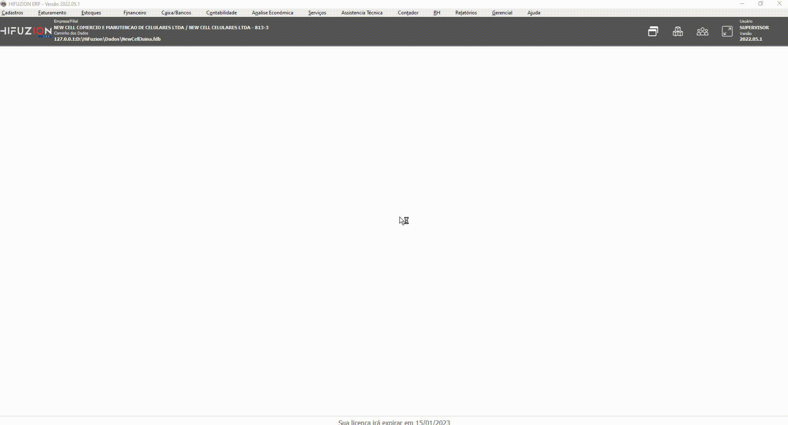
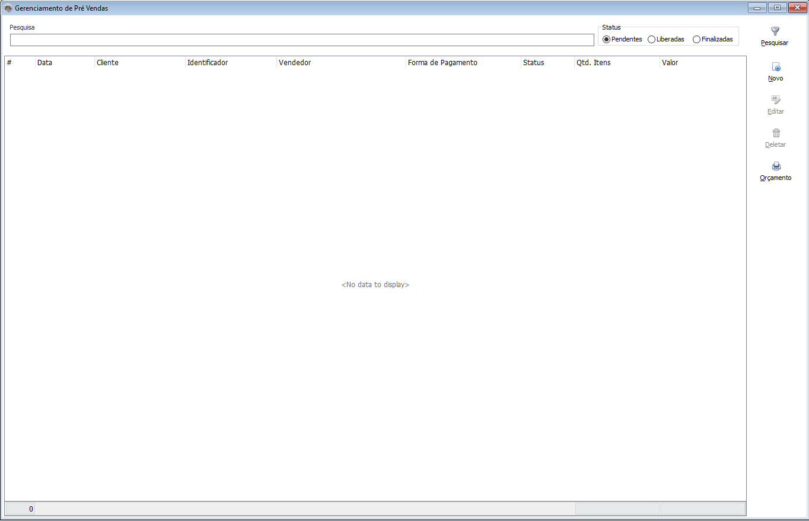
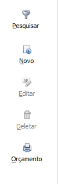
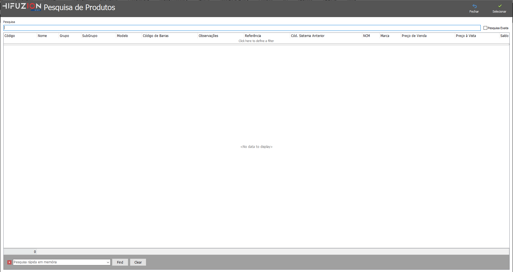
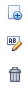
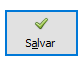
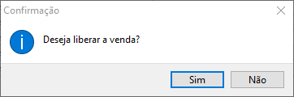
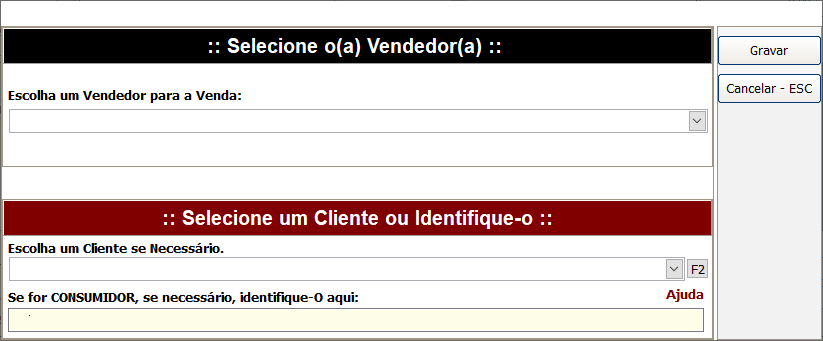
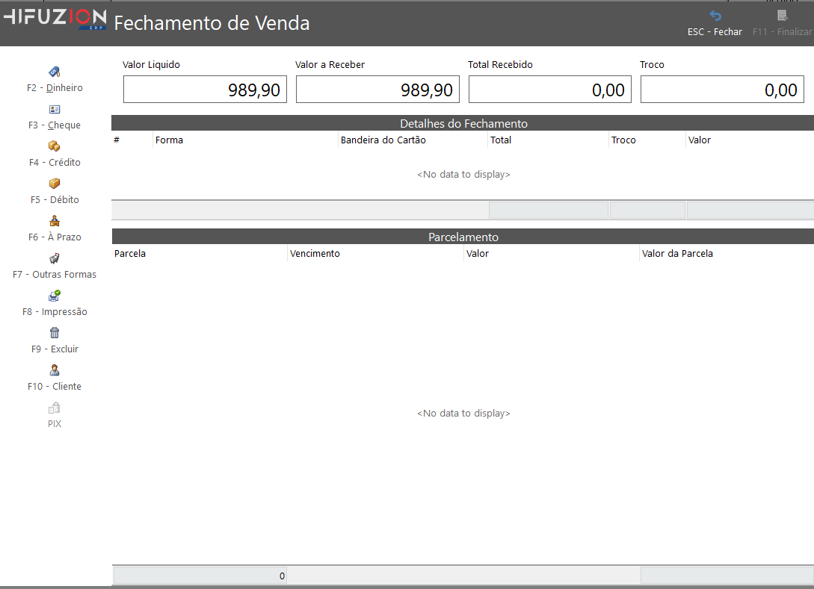

Tela de venda-rápida
Configurações/Parâmetros
Antes de aprendermos como usar o sistema, devemos aprender e entender algumas configurações/parâmetros da tela, vamos lá?
Configurações/Parâmetros como abrir?
- Ao abrir o sistema basta prestar atenção nas opções na parte superior do software. os caminhos são Faturamento > Parâmetros e configurações > Pré venda parâmetros

- Após abrirmos os parâmetros da pré venda encontramos várias opções. vamos entender um pouco mais sobre elas.

Cliente Padrão
Forma de pagamento padrão Um campo que pode ser preenchido com algum cliente, lembrando que sempre que for efetuar a venda, esse cliente já vai vir padrão.
Forma de pagamento padrão
Será definido uma forma de pagamento padrão, lembrando que o valor informado, será informado padrão, quando for liberar a venda.
Parcelas Insentas
Será o número de parcelas padrões
Limite de dias
Sera informado o limite de dias, padrão.
Vendedor Finaliza pré venda
Essa opção, permite que o próprio vendedor na pré venda, já finalize a pré venda, e que não precise ir para o caixa, para o caixa finaliza-lá.
Permite Descontos
Essa opção, libera um botão na hora de realizar a pré venda, que permite descontos no fechamento da total.
Permite alterar valor unitário
Essa opção, libera que seja modificado o valor do unitário, na hora de realizar a pré venda.
Avisa saldo negativo do produto
Essa opção permite que o próprio sistema alerte quando o saldo do estoque, está negativo do indicado no cadastro dele, exemplo: caso o produto minimo no estoque seja 10, o sistema vai alertar que esse produto esta com 10 ou menos produtos no estoque.
Permite condicional
Essa opção permite que seja gerada uma condicional, através da pré venda.
Utiliza Leitor
Essa opção, permite usar o leitor de código de barras, e quando escaneado, se o produto estiver com todas as informações corretas, é adicionado N/ .;automaticamente, sem a necessidade de adicionar manualmente.
Utiliza lista de produtos
pokaspokdasdapopkosadp pokkaopsdopa opkadkoppasdk opaspkodpasopkapsod opaspodsapokpaosk
Como usar?
- Agora que entendemos sobre as configurações vamos para as telas.

- Agora com a tela aberta vamos entender alguns botões.

Pesquisar
Podemos usar para pesquisar alguma pré venda, caso tenha muita pré venda e fique difícil de identificar aonde ela está.
Status
Pendente -> Pré venda, pendente, criada, agurdando para ser liberada ou finalizada.
Liberada -> Pré venda, liberada, aguardando para ser finalizada.
FInaliada -> Pré venda, finalizada, finalizada a venda.
Como registrar uma nova pré vanda?
 Registrando
Para registrar uma nova tarefa, vamos clicar no botão novo, após isso, vamos ir preenchendo as informações, presentes, inicialmente, como data > Cliente Lembrando que caso, o cliente seja "Cliente consumidor | ou | cliente consumidor final" será obrigatório um identificador, ou você pode informar um cliente próprio casdastrado.
Vendedor -> Após isso vamos informar o vendedor que está realizando a venda.
Forma de pagamento -> após isso, vamos informar a forma de pagamento, lembrando que podemos configurar uma padrão, no tutorial dos parâmetros.
Pesquisa -> Em pesquisa, apertando o enter, vamos entrar em uma tela, que podemos pesquisar o produto e ver algumas informações mais, entretanto, nada impede de você colocar o código do produto automático, caso tenha ele em mãos.

Lembrando que caso queria fazer uma pesquisa de todos os produtos, basta apenas apertar Enter Sem colocar nenhum produto no campo de pesquisa, ou você também pode pesquisar algum produto, pelo nome, código ou código de barras.
 após escolher o nosso produto, podemos clickar em salvar ou podemos clicar 7 vezes o Enter, caso queira adicionar mais um produto, basta apertar F2 para podermos cadastrar um novo produto, F3 utilizamos para editar o produto
após escolher o nosso produto, podemos clickar em salvar ou podemos clicar 7 vezes o Enter, caso queira adicionar mais um produto, basta apertar F2 para podermos cadastrar um novo produto, F3 utilizamos para editar o produto
caso queira finalizar vamos ter um botão de salvar na direita, podemos clicar nele.

Primeiro Botão -> Novo Pruduto
Segundo Botão -> Editar Pruduto
Terceiro Botão -> Deletar Pruduto
Finalizando a Pré Venda
Depois que estiver tudo pronto podemos liberar a pré venda, para liberarmos a pré venda podemos ir no botão
Salvar

Apertando o botão de Salvar ira aparecer uma tela 
Apertando NÃO seremos redirecionado para tela da Pré Venda
Apertando SIM seremos redirecionado para tela de fechamento

Aqui só ireimos revisar as Informação que colocamos na tela de Pré Venda, Vamos apertar em GRAVAR
